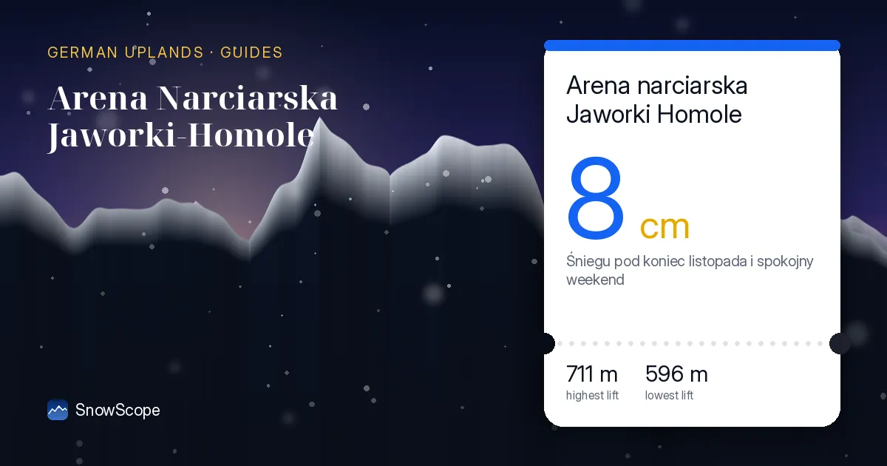

Arena Narciarska Jaworki-Homole: 8 cm śniegu pod koniec listopada i spokojny weekend
W Arenie Narciarskiej Jaworki-Homole leży dziś, w piątek 27 listopada 2026, 8 cm śniegu w górnej części stoku, po 9 cm świeżego opadu w ostatnich trzech dniach. Do poniedziałku nie zapowiada się wiele nowego śniegu, więc start sezonu zależy od mrozu i armatek.
Zobacz prognozę śniegu dla Arena narciarska Jaworki Homole w aplikacji SnowScopeGrubość śniegu, alerty i mapa 3D, za darmo.
Śnieg dziś i w najbliższych dniach
Najwięcej spadło w czwartek: 6 cm, a w piątek jeszcze 3 cm. W sobotę możliwy jest najwyżej centymetr, potem sucho. W poniedziałek 30 listopada pokrywa w górnej części stoku powinna wynosić około 7 cm.
Stok leży między 596 m a 711 m, u wylotu wąwozu Homole w Pieninach. To niewielki ośrodek, ale z charakterem: widok na Małe Pieniny i dolinę Grajcarka.
Co to oznacza dla narciarzy
Kilka centymetrów naturalnego śniegu to za mało, by otworzyć trasy bez naśnieżania. Najważniejsze są teraz mroźne noce: przy temperaturze poniżej zera armatki mogą przygotować podstawę w kilka dni.
Ośrodki tej wielkości zwykle ruszają, gdy tylko pozwala na to pogoda, często najpierw z jedną trasą. Przed wyjazdem warto sprawdzić komunikat stacji o otwarciu.
Czarny Groń i inne małe stacje
Dla porównania Czarny Groń w Beskidzie Małym ma dziś 17 cm śniegu w górnej części, po 8 cm w trzy dni. To również mała stacja, ale położona nieco wyżej, do 800 m.
W całej Małopolsce i na Podkarpaciu ten tydzień przyniósł pierwszy prawdziwy zimowy opad. Wyżej, w Tatrach i na Babiej Górze, śniegu jest więcej, ale tam sezon na stokach zjazdowych też zaczyna się zwykle w grudniu.
Kiedy zwykle zaczyna się sezon w Pieninach
Pieniny leżą niżej niż Tatry i zimą bywają łagodniejsze. Naturalna pokrywa śnieżna wystarczająca do jazdy pojawia się tu zwykle dopiero w drugiej połowie grudnia lub w styczniu, a przed świętami stoki opierają się głównie na naśnieżaniu. Dobry, mroźny początek grudnia jest więc ważniejszy niż sam listopadowy opad.
Najlepsze warunki są zwykle w styczniu i lutym, w czasie ferii zimowych, kiedy noce są najzimniejsze, a śnieg trzyma się najdłużej.
Najczęstsze pytania
Czy stok jest już otwarty? O otwarciu decyduje stacja i zależy to od naśnieżania. Przy kilku centymetrach naturalnego śniegu i mroźnych nocach start w pierwszej połowie grudnia jest realny, ale nie pewny.
Ile śniegu spadnie w najbliższych dniach? Niewiele: w ciągu siedmiu dni najwyżej 4 cm w górnej części stoku. Prawdziwy zimowy opad trzeba będzie jeszcze poczekać.
Czy to dobre miejsce dla początkujących? Tak. Krótkie, niezbyt strome trasy, mała kolejka do wyciągu i spokojna okolica sprzyjają nauce. Dla zaawansowanych to raczej miejsce na rozgrzewkę przed większymi stacjami.
Gdzie jeszcze pojeździć w okolicy? Na Słowacji, kilkanaście kilometrów dalej, są większe ośrodki, a w stronę Nowego Targu i Białki Tatrzańskiej leżą największe stacje Podhala z rozbudowanym naśnieżaniem.
Jak dojechać? Z Krakowa to około dwóch i pół godziny samochodem przez Nowy Targ i Krościenko, a ze Szczawnicy kilka minut drogą wzdłuż Grajcarka. Zimą warto wyjechać wcześnie, bo parking przy stoku jest niewielki.
Czy warto przyjechać na weekend? Jeśli stacja ogłosi otwarcie, tak: pierwsze dni sezonu w małych ośrodkach są zwykle spokojne, a śnieg z armatek dobrze trzyma się przy mrozie.
Jak czytać nasze liczby
Wartość 8 cm dotyczy górnej części stoku i pochodzi z naszej mapy śniegu na dziś; to szacunek dla obszaru, a nie pomiar na trasie. Na przygotowanych trasach, po naśnieżaniu i ratrakowaniu, warstwa jest zwykle grubsza niż naturalna pokrywa w lesie obok.
Prognoza na najbliższe trzy dni: 1 cm. W poniedziałek naturalna pokrywa będzie podobna jak dziś, więc decydujące będą temperatury nocą.
Praktycznie
Jaworki leżą kilka kilometrów od Szczawnicy, a ze stoku łatwo połączyć narty ze spacerem wąwozem Homole albo wycieczką do Szczawnicy. To dobre miejsce na pierwszy dzień na nartach z dziećmi: krótkie wyciągi, mało ludzi, spokojna atmosfera.
Codzienne dane o śniegu: Jaworki-Homole i Czarny Groń.
Porady dla narciarzy
- Przed wyjazdem sprawdźcie komunikat stacji o otwarciu tras.
- Weźcie łańcuchy lub dobre opony zimowe: drogi w Pieninach bywają oblodzone rano.
- Przy małym ruchu najlepsze są poranki w dni powszednie.
- Więcej o śniegu w Polsce na stronie Polska.
About these numbers
Dane o śniegu: dzisiejsza mapa i prognoza SnowScope (szacunek dla obszaru, nie komunikat stacji).
Official avalanche bulletins: EAWS – European Avalanche Warning Services
Cite this report
For research, teaching or the press: the numbers and charts are free to reuse under CC BY 4.0 with this citation.
SnowScope (2026), Arena Narciarska Jaworki-Homole: 8 cm śniegu pod koniec listopada i spokojny weekend, https://snowscope.app/blog/pl/2026/11/arena-narciarska-jaworki-homole-snieg-koniec-listopada-2026-pieniny.html, accessed 2026-11-27
SnowScope (Atlas Labs). (2026, November 27). Arena Narciarska Jaworki-Homole: 8 cm śniegu pod koniec listopada i spokojny weekend. SnowScope snow reports. https://snowscope.app/blog/pl/2026/11/arena-narciarska-jaworki-homole-snieg-koniec-listopada-2026-pieniny.html
BibTeX
@misc{snowscope2026arenanarciarskajaworkiho,
author = {{SnowScope (Atlas Labs)}},
title = {Arena Narciarska Jaworki-Homole: 8 cm śniegu pod koniec listopada i spokojny weekend},
year = {2026},
month = nov,
howpublished = {\url{https://snowscope.app/blog/pl/2026/11/arena-narciarska-jaworki-homole-snieg-koniec-listopada-2026-pieniny.html}},
note = {Published 2026-11-27 18:17 UTC; accessed 2026-11-27}
}· CC BY 4.0 · Methods, data and tools →
Arena narciarska Jaworki Homole: snow and temperature by height, this winter vs last (tools) →
Follow Arena narciarska Jaworki Homole
Za darmo: wiadomość, gdy nadchodzi świeży śnieg, i prognoza co rano.